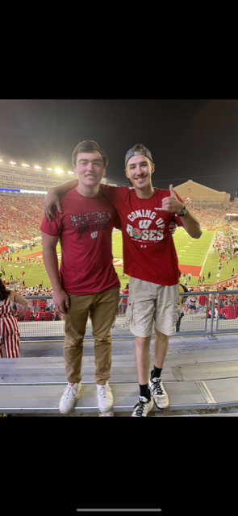

At our golf company, we believe that golf is more than just a sport - it's a way of life. We are passionate about helping golfers of all skill levels achieve their full potential and enjoy the game to its fullest.
Our core values are centered around three key principles:
Quality
We are committed to providing the highest quality golf equipment, apparel, and accessories on the market. Our products are designed with the latest technology and materials to help golfers improve their performance and enhance their experience on the course.
Innovation
We are constantly pushing the boundaries of what's possible in golf. We invest heavily in research and development to create cutting-edge products that help golfers get the most out of their game. Whether it's through new club designs, advanced training aids, or innovative apparel, we are always striving to stay ahead of the curve.
Community
We believe that golf is at its best when it brings people together. That's why we are committed to building a strong and inclusive golf community, both online and offline. We support golf programs for youth, veterans, and other underserved communities, and we sponsor events and tournaments that bring golfers of all backgrounds together.

The two beautiful owners